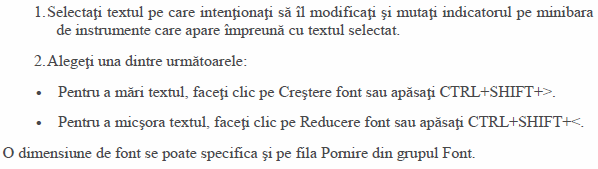
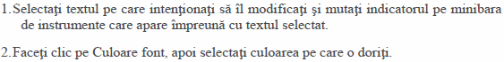
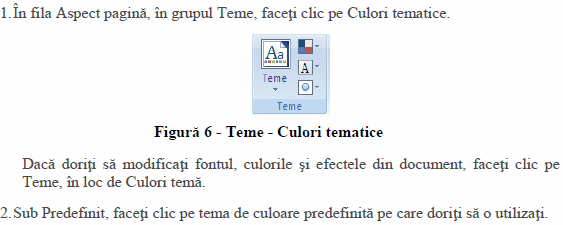
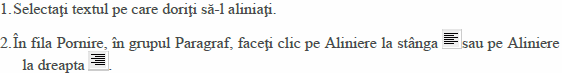
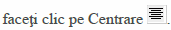
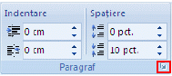
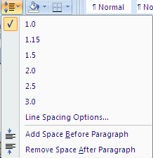
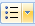
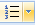

F I Ş A Nr. 2
Fonturi, Paragrafe
1. Modificarea dimensiunii textului

2. Modificarea culorii textului

3. Aplicarea unei teme de culoare predefinite

4. Alinierea textului la stâga sau dreapta sau centrarea acestuia
 sau 
5. Indentarea paragrafului
|  |
Selectaţi paragraful;
În fila Aspect pagină (Page Layout) selectaţi mărimea indentării în stânga (left) sau dreata (right) pe care o dorim (Prin indentare se înţelege spaţiul care se lasă în stânga sau în dreapta paragrafului);
|
Dacă dorim să lăsăm spaţiu înainte sau după paragraf, stabilim aceste valori în caseta Spaţiere (Spacing)
Obs. Putem lansa caseta de dialog Paragraf(Paragraph) şi aici să stabilim mărimea indentării şi în caseta special să aplicăm indentarea doar pentru prima linie (First line) a paragrafului.
6. Modificarea spaţierii liniilor
Selectaţi paragraful sau paragrafele dorite:
Metoda 1
În fila Aspect pagină (Page Layout) lansaţi caseta de dialog Paragraf (Paragraph);
Din lista Spaţiere linii (Line Spacing) puteţi alege: Spaţiere normală (Single), Spaţiere la un
rând şi jumătate (1,5 lines), Spaţiere la două rânduri (Double) sau alte spaţieri speciale (At least,
Exactly sau Multiple );
Se dă clic pe butonul OK.
Metoda 2
|  |
În fila Pornire (Home) daţi clic pe pictograma Spaţiere linii (Line Spacing) şi din lista deschisă alegeţi spaţierea dorită: 1,0 ; 1,15 ; 1,5 ; 2,0 ……… |
7. Adăugarea de marcatori sau numerotare într-o listă
Selectaţi paragraful sau paragrafele dorite;
În fila Pornire (Home) daţi clic pe pictograma Marcatori (Bullet)  sau pe pictograma Numerotare (Numbering)  şi alegeţi forma dorită
8. APLICAŢIE:
- Lansaţi procesorul de text Microsoft Word 2022
- Scrieţi un titlu şi trei paragrafe (fraze)
- Modificaţi mărimea titlului la 24, primul paragraf 14, al doilea 16, al treilea 12
- Modificaţi culoarea titlului în roşu iar primul paragraf în verde
- Aplicaţi paragrafului al doilea o temă predefinită
- Aliniaţi titlul pe centru, iar ultimul paragraf pe dreapta
- Identaţi paragraful al doilea în stânga cu 2,5 cm (1”) în interior
- Spaţiaţi liniile paragrafului 2 la valoarea 1.5 iar liniile paragrafului al treilea la 2.0
- Adăugaţi marcatori celor trei paragrafe